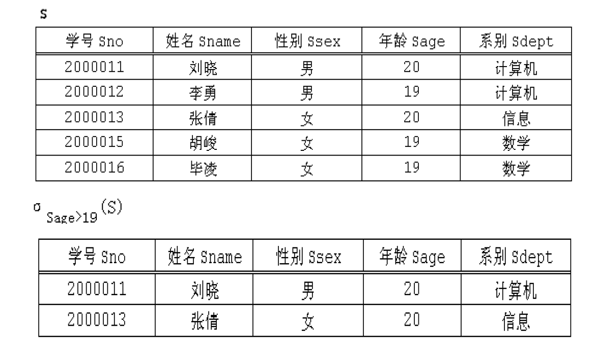

关系模型与关系代数
约 2461 个字 预计阅读时间 8 分钟
1. 关系模型¶
关系模型是一种数据模型，它和一般的数据模型一样，由如下三部分组成：
-
关系数据结构
-
关系数据操作
-
关系完整性约束
1.1 关系数据结构¶
1.1.1 关系模型可以看成简单的二维表¶
单一的数据结构：关系
在关系模型中，无论是实体还是实体间的各种联系均用关系来表示。
数据的逻辑结构：二维表
从用户角度，关系模型中数据的逻辑结构是一张二维表。具体来说，是一张非嵌套的二维表。
Note
嵌套表无法在数据库中直接等价表示, 其不满足关系数据库第一范式
关系模型采用关系(Relation)作为数据结构，直观地讲，关系就是简单的表(Table)，由三部分构成:
- 表名（关系名）
- 表头（关系模式）
- 数据（关系实例）
1.1.2 域和笛卡尔积¶
域(Domain)： 一组具有相同数据类型的值的集合。
整数、实数都是域。域可以被理解为程序设计语言中的数据类型，如C语言中的int，float等。
笛卡尔积(Cartesian Product)： 给定一组域 $D_1，D_2，…，D_n$，$D_1，D_2，…，D_n$的笛卡尔积为：
$$
D_1 \times D_2 \times \cdots \times D_n = {(d_1, d_2, \cdots d_n) | d_i \in D_i, i=1,2,\cdots,n}
$$
其中，每个元素$(d_1, d_2, \cdots d_n)$ 叫作一个n元组($N \text{-} Tuple$)或简称元组(Tuple)。元素中的每一个值 $d_i$ 叫作一个分量(Component)。
1.1.3 关系模型的几个定义¶
属性(Attribute)：关系中的一列即为一个属性。
域：属性的取值范围称为该属性的域。
码：可以唯一确定一个元组的最小属性集合称为候选码(Candidate Key)，或简称为码(Key)。
元组：每个属性的具体数值组合，即二维表里的一行。
分量：元组中的一个属性值。
关系模式(Relation Schema)：对关系的描述，一般表示为：关系名(属性1，属性2，…，属性n)。
关系实例(Relation Instance)：关系的内容。
Note
一个关系由关系名、关系模式和关系实例组成，分别对应于表名、表头和表中的数据。关系名和关系模式相对稳定，关系实例会随时间而发生变化。
如： 关系名：学生
关系模式：学生(学号，姓名，专业)
关系实例：(321010****, 张三, GIS)
数据库(Database) 是关系的集合。
1.1.4 关系的三种类型¶
- 查询关系：通常又称为基本表或基表)，基本表是实际存在的表，是实际存储数据的逻辑表示。
- 查询表：查询结果对应的表。
- 视图表：由基本表或其他视图表导出的表，是虚表，不对应实际存储的数据
1.2 关系数据操作¶
特点： 集合操作方式，即操作的对象和结果都是集合。
常用关系操作：
-
查询：选择、投影、连接、除、并、交、差
查询的表达能力是关系操作中最主要的部分。
-
数据更新：插入、删除、修改
关系数据语言的种类:
- 关系代数语言：用对关系的运算来表达查询要求
- 关系演算语言：用谓词来表达查询要求
- 介于关系代数和关系演算之间的语言，即
结构化查询语言SQL
1.3 关系完整性约束¶
关系模型的完整性规则是对关系的某种约束条件。
三类完整性约束：实体完整性、参照完整性、用户定义完整性。
实体完整性和参照完整性是关系模型必须满足的完整性约束条件，被称作是关系的两个不变性，应该由关系数据库系统自动支持。
区分候选码与主码
主码是从候选码中选出的一个特定的候选码，用来作为表的主键。一个表只能有一个主码，但可以有多个候选码。
1.3.1 实体完整性(Entity Integrity)¶
若属性A是基本关系R的主码(Primary Key)，则任何一个元组在属性A上不能取空值(NULL)。
NULL表示"unknown" 或"undefined"的特殊值。
1.3.2 参考完整性(Referential Integrity)¶
也称为引用完整性。在关系模型中，实体以及实体之间的联系都是用关系来表示的，这样就自然存在着关系与关系之间的引用。
参照完整性规则就是定义外键与被参照的主键之间的引用规则。外键一般应符合：值为空或者等于其所参照的关系中的某个元组的主码。
参考完整性举例
选课关系作为参照关系：选课(课程号，成绩，学号)，"学号"是选课关系的外码。
学生关系作为被参照关系：学生(学号，姓名，性别，专业)，"学号"是学生关系的主码。
选课关系里的"学号"参照自学生关系的"学号"。
1.3.3 用户定义完整性(User-defined Integrity)¶
举例：课程(课程号，课程名，学分)
- “课程号”属性必须取唯一值
- 非主属性“课程名”不能取空值
- “学分”属性只能取值{1，2，3，4}
2. 关系代数¶
2.1 概述¶
关系代数：一种抽象的查询语言；用对关系的运算来表达查询。
关系代数运算的三个要素：
- 运算对象：关系
- 运算结果：关系
- 运算符：四类。集合运算符、专门的关系运算符、算数运算符、逻辑运算符
四类关系代数运算符：
-
集合运算符
将关系看成元组的集合；运算是从关系的“水平”方向即行的角度来进行。
-
关系运算符
不仅涉及行而且涉及列。
-
算数运算符
辅助专门的关系运算符进行操作。
-
逻辑运算符
辅助专门的关系运算符进行操作
| 集合运算符 | 含义 | 关系运算符 | 含义 | 比较运算符 | 含义 | 逻辑运算符 | 含义 |
| $\cup$ | 并 | $\sigma$ | 选择 | $\gt$ | 大于 | $\lnot$ | 非 |
| $-$ | 差 | $\pi$ | 投影 | $\ge$ | 大于等于 | $\land$ | 与 |
| $\cap$ | 交 | $\Join$ | 连接 | $\lt$ | 小于 | $\lor$ | 或 |
| $\times$ | 广义笛卡尔积 | $\div$ | 除 | $\le$ | 小于等于 | ||
| $=$ | 等于 | ||||||
| $\ne$ | 不等于 |
2.2 传统的集合运算¶
并¶
{kind=link}
交¶
{kind=link}
差¶
{kind=link}
广义笛卡尔积¶
{kind=link}
2.3 专门的关系运算¶
选择¶
选择针对单个关系中的数据进行操作，属于一元运算符，是指从关系中选择若干行。
选择的例子
$\sigma_{Sage>19}(S)$ 表示：使用选择操作符(σ)从学生关系S中选择出哪些年龄大于19岁的学生。
查询表达式中的下标“Sage>19”给出的是选择条件，只有符合该条件的元组才可以被返回到结果中。 
{kind=link}
投影¶
投影操作($\pi$)是指从关系中选择若干列。
投影的例子
$\pi_{Sname, Sage}(S)$ 表示：从学生关系S中找出所有学生的名字和年龄。
查询表达式中的下标“Sage>19”给出的是选择条件，只有符合该条件的元组才可以被返回到结果中。
{kind=link}
连接¶
Theta-Join是最有用的操作之一。
连接运算的含义：从两个关系的笛卡尔积中选取属性间满足一定条件的元组。 $$ R \Join_{条件} S $$ 其中条件一般形式是$A \ \theta \ B$, $\theta = \lbrace =, \gt, \ge, \lt, \le, \neq \rbrace$，A是关系R中的属性或者是一个常数，B是关系S中的属性或者是一个常数，A和B必须是同一个定义域(相同的数据类型)。还可以用逻辑运算符和上面的一般形式构成更复杂的条件。
两类常用的连接运算：
-
等值连接(Equal Join)
当条件 $A \theta B$ 中$θ$为"="的连接运算称为等值连接。
含义是：从关系R与S的广义笛卡尔积中选取A、B属性值相等的那些元组。
等值连接的例子
-
自然连接(Natural Join)
自然连接的特点
一般的连接操作是从行的角度进行运算。自然连接还需要取消重复列，所以是同时从行和列的角度进行运算。
自然连接是一种特殊的等值连接。
自然连接要求关系R中的属性A和关系S中的属性B名字相同；
在返回结果时还会把结果中重复的属性列去掉(去重)。
含义是：R和S具有相同的属性组A(B)，提取出属性组相同的那些元组。
自然连接的例子
{kind=link}
{kind=link}
除¶
除运算可以这样来理解：假设有两个关系A和B，其中A只有两个属性X和Y，B只有一个属性Y(和关系A中的Y属性具有相同的域)，对于A中的每一个x(属性X的取值)所对应的y(属性Y的取值)集合，看它是否包含B中所有的y值，如果包含，则x属于A÷B的结果集。
除运算的例子
{kind=link}
2.4 重命名¶
辅助操作，对关系名、属性名进行重命名。
用法：
- $\rho_{R(A_1, \cdots, A_n)}(S) $：对关系名和属性名进行重命名
- $\rho_{R}(S) $：对关系名进行重命名
- $\rho_{A_1, \cdots, A_n}(S) $：对属性名进行重命名
用途：
-
统一参与集合运算的关系模式的属性名
$\rho_{c(name)}(\pi_{Sname}(Student)) \cup \rho_{c(name)}(\pi_{Cname}(Course))$
-
便于同一关系的“自连接”
$\rho_{c1(no1, n1, p1, c)}()Course \Join \rho_{c2(no2, n2, p2, c)}(Course)$
创建日期: 2024年3月10日 16:11:48